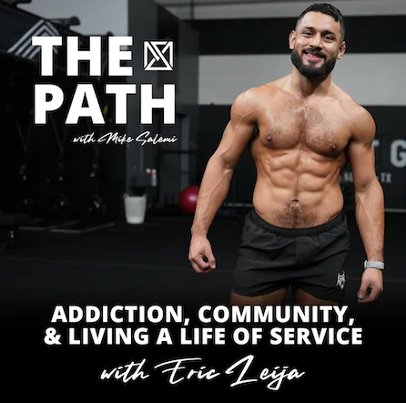

B872 · Addiction, Community, & Living a Life of Service
Hi {first_name},
Many people know Eric Leija as the Primal Swoledier on Instagram. He has cultivated a massive following and with that comes new experiences to navigate. In this episode, Eric talks about the struggles he has faced with substance abuse, imposter syndrome, and navigating emotional challenges in life. Today he shares what has helped him most in overcoming his challenges and living a truly balanced life.
In Episode #18 of The Path, Eric and I discuss:

Click here to listen on Spotify. Click here to listen on Apple.
If you are enjoying the show please subscribe and leave a review. Your support is always appreciated.
In Gratitude, Mike |